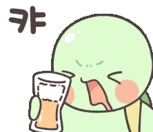

CALENDAR
오늘 방송이 있는지, 이번 달 일정이 어떻게 잡혀 있는지 보는 화면입니다.
이전/다음 버튼으로 월을 이동하고 오늘 버튼으로 현재 달로 돌아옵니다.
날짜를 누르면 그날의 방송 시간, 메모, 다시보기 정보를 볼 수 있습니다.
방송이 진행 중이면 상단 LIVE 표시를 통해 방송 페이지로 빠르게 이동할 수 있습니다.
방송 일정, 노래책, 라이브 기록, 음악 영상을 한곳에서 편하게 보는 팬 사이트입니다. 찾고 싶은 내용이 있으면 위쪽 메뉴나 모바일 QUICK MENU에서 바로 이동하면 됩니다.

CALENDAR에서 오늘 방송과 이번 달 일정을 먼저 확인합니다.
SONGBOOK에서 제목이나 가수 이름으로 부를 수 있는 노래를 찾습니다.
LIVE RECORD에서 예전에 방송에서 부른 곡과 날짜를 찾아봅니다.
QUICK MENU에서 SOOP, 유튜브, 카페 등 자주 쓰는 링크로 이동합니다.
오늘 방송이 있는지, 이번 달 일정이 어떻게 잡혀 있는지 보는 화면입니다.
월별 편성표를 표 형태로 크게 확인하는 화면입니다.
방송에서 부를 수 있는 노래를 검색하고 카테고리별로 둘러보는 화면입니다.
지난 방송에서 어떤 노래를 불렀는지 찾아보는 화면입니다.
오리지널, 커버, 라이브 영상 등 공개된 음악 콘텐츠를 모아보는 화면입니다.
시청자나 후보를 넣고 사다리, 룰렛, 뽑기, 핀볼로 당첨자를 뽑는 화면입니다.
모바일이나 작은 화면에서 자주 쓰는 메뉴와 외부 링크를 빠르게 여는 메뉴입니다.
화면이 좁을 때는 상단 메뉴 버튼으로 QUICK MENU를 열 수 있습니다. 표가 많은 화면은 가로로 밀어서 보거나 PC버전으로 전환하면 더 편하게 볼 수 있습니다.
잘못된 정보, 깨진 링크, 보기 불편한 부분을 발견하면 hanul4269@kakao.com으로 알려주세요.